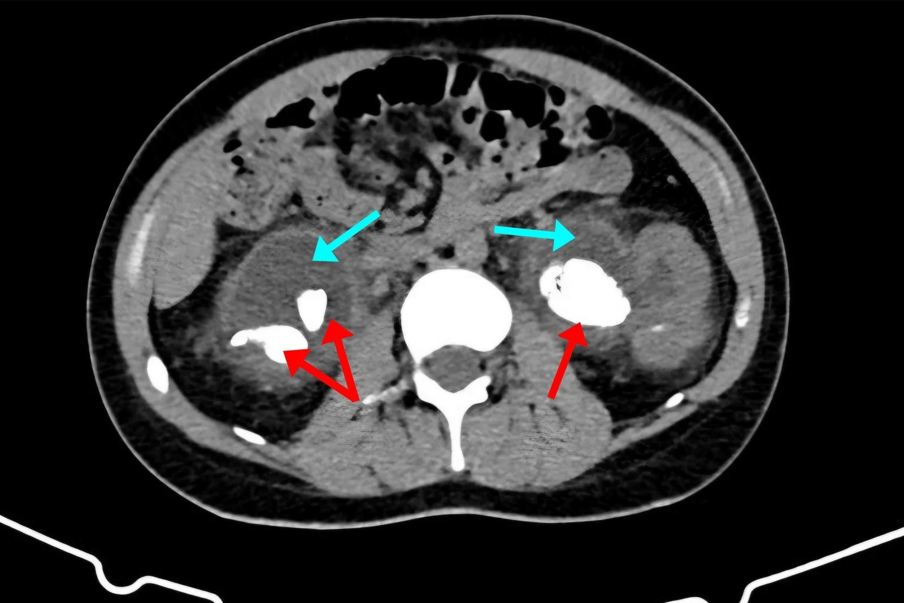
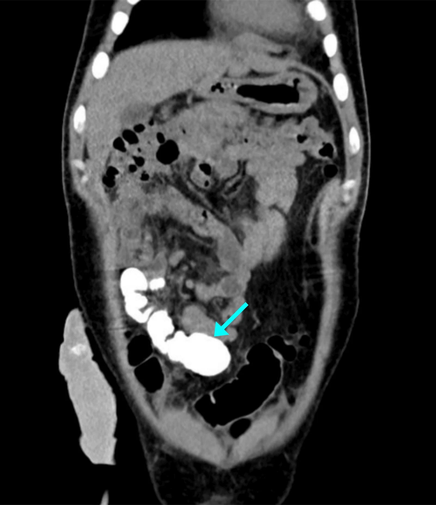
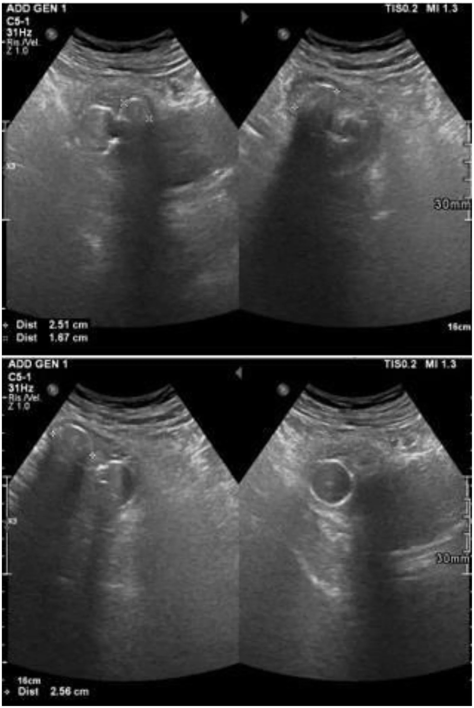
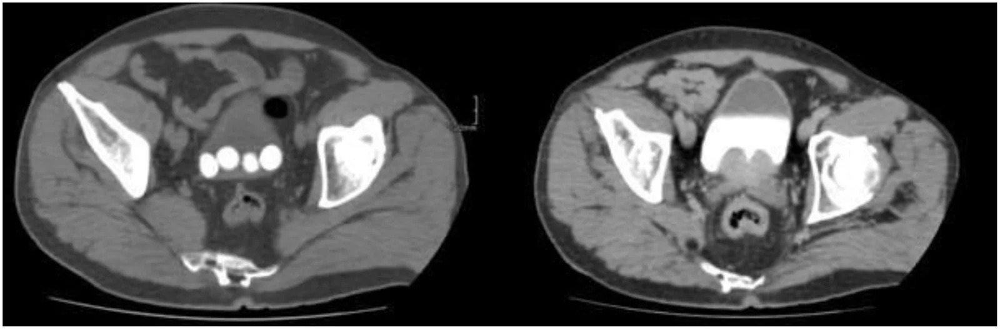
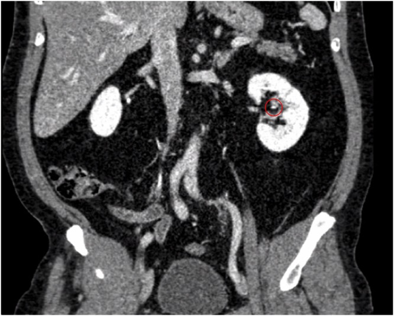

190 — Sỏi đường niệu trên & sỏi thận ghép ở bệnh nhân bàng quang thần kinh / Upper-tract and allograft stones in the neurogenic bladder
Tags: pattern:soi-nieu pattern:tac-nghen pattern:nhiem-trung vung:he-nieu vung:than vung:bang-quang vung:than-ghep protocol:CT-lieu-thap protocol:PCNL protocol:URS score:Clavien-Dindo
Mức chắc chắn (certainty): tổng hợp y văn (literature synthesis) — nghiên cứu so sánh sau nội soi niệu quản (Breu B et al., J Clin Med 2025, PMC12610729), loạt PCNL ở bàng quang thần kinh (Heijkoop B et al., BJUI Compass 2023, PMC10560620), tổng quan sỏi thận ghép (Solano C et al., J Clin Med 2024, PMC11278228), loạt 8.835 bệnh nhân ghép thận (Sandberg M et al., BJUI Compass 2024, PMC11479801), cộng ca nguyên văn sỏi san hô ở bể thận chuyển lưu (Ahmadi M et al., Cureus 2026, PMC13685014). Số nào nguồn không nêu ghi "chưa rõ".
Bài này bàn sỏi đường niệu trên (thận/niệu quản) và sỏi thận ghép ở người có bàng quang thần kinh (neurogenic bladder) hoặc bể thận chuyển lưu (urinary diversion). Sỏi bàng quang và sỏi quanh catheter ở trẻ ở 691; đánh giá bàng quang trước ghép thận ở 189; nguyên tắc chung sỏi–ứ nước–nhiễm trùng ở 152.
1. Tổng quan bệnh học – cơ chế hình ảnh
- Vì sao nhóm bàng quang thần kinh tạo sỏi nhiều: ứ nước do bàng quang co bóp không hiệu quả + áp lực bàng quang cao + trào ngược bàng quang–niệu quản; nhiễm khuẩn niệu mạn và màng sinh học trên catheter; bất động → hủy xương → tăng canxi niệu; và dịch vụn/mảnh sỏi sót sau can thiệp. Ước tính bệnh nhân tổn thương tủy sống (spinal cord injury — SCI) có nguy cơ sỏi 7–20% trong 10 năm, nguy cơ suốt đời cao gấp tới 6 lần dân số chung (Heijkoop B et al. 2023, PMC10560620).
- TẠI SAO sỏi ở nhóm này thường là sỏi nhiễm trùng: vi khuẩn phân giải urê (urease-splitting) — Proteus, Klebsiella, Pseudomonas — phân hủy urê thành amoniac, kiềm hóa nước tiểu (pH > 7,2) và kết tủa magie–amoni–phosphat (struvite) + apatit carbonat, tạo sỏi san hô (staghorn) đúc khuôn đài bể thận. Hệ quả hình ảnh: sỏi rất cản quang, đúc theo hình đài bể thận, thường kèm ứ nước và thành bàng quang dày.
- Số liệu thành phần sỏi xác nhận cơ chế: sau nội soi niệu quản, nhóm bàng quang thần kinh có tỷ lệ sỏi struvite và calci phosphat hỗn hợp cao hơn rõ, trong khi nhóm chứng 75% là calci oxalat (Breu B et al., J Clin Med 2025, PMC12610729). Đây là lý do phải cấy sỏi/sinh thiết sỏi chứ không chỉ nhìn đậm độ.
- TẠI SAO thận ghép "im lặng": thận ghép mất chi phối thần kinh (denervation) nên không có cơn đau quặn thận điển hình; biểu hiện thường là tiểu máu, tăng creatinin, nhiễm trùng niệu, dễ bị nhầm với thải ghép cấp hoặc hoại tử ống thận cấp. Trong một tổng quan, hơn 40% sỏi thận ghép được phát hiện tình cờ; tiểu máu + suy thận cấp gặp 23,5%, nhiễm trùng niệu 5,9% (Solano C et al. 2024, PMC11278228).
- Dịch tễ sỏi thận ghép: 0,1–6,3% (tổng quan); trong loạt 8.835 người ghép, 128 người (1,4%) tạo sỏi trong thận ghép, thời gian trung bình 6,2 năm, đường kính lớn nhất trung bình 5,7 mm, trung bình 1,7 viên (Sandberg M et al., BJUI Compass 2024, PMC11479801). Sỏi thận ghép không làm tăng tỷ lệ mất ghép trong loạt này (p = 0,524) nhưng thời gian tới mất ghép dài hơn ở nhóm có sỏi (p = 0,008) — đọc đúng: đây là kết quả của theo dõi sát và can thiệp sớm, không phải "sỏi vô hại".
- TẠI SAO vị trí giải phẫu quyết định hình ảnh: thận ghép nằm hố chậu, trên mạch chậu, niệu quản ngắn, cắm vào bàng quang hoặc bể chuyển lưu; vì vậy sỏi hay gặp ở niệu quản đoạn xa (49,01%), đài dưới (17,6%), bể thận (7,8%) (Solano C et al. 2024). Kiểu miệng nối cũng quyết định nguy cơ: bể chuyển lưu/neobladder có tỷ lệ sỏi tới 18%, trong khi Lich–Gregoir thấp nhất (Solano C et al. 2024).
- Ngưỡng đậm độ trên CT: sỏi canxi điển hình rất cản quang — ca minh họa 1.613 HU (Purwanto HPA et al., Int J Surg Case Rep 2026, PMC13340684). Không có một ngưỡng HU duy nhất để "chốt" thành phần: trên CT một mức năng lượng, maxHU phân biệt sỏi acid uric với sỏi không acid uric đạt độ nhạy 92%, độ đặc hiệu 94%, độ chính xác 94%; phương pháp định lượng dùng phân bố đậm độ nội bộ đạt 100%/97%/98% (Jendeberg J et al., Eur Radiol 2021, PMC8270827). Sỏi acid uric chiếm 7–11% sỏi niệu nói chung.
- TẠI SAO phải hạ liều tia ở nhóm này: bệnh nhân sỏi thường chụp CT nhiều lần; tới 20% bệnh nhân sỏi mới chẩn đoán có liều tích lũy vượt nền gấp ~17 lần (Baralo B et al., Asian J Urol 2020, PMC6962710). CT đầu tiên nên là CT không cản quang liều thấp; với CT đếm photon, hạ mức chất lượng ảnh từ IQL70 xuống IQL50 giảm SSDE từ 4,57 xuống 3,53 mGy (−22,8%) mà tỷ lệ phát hiện sỏi vẫn 91,3–100% (Niehoff JH et al., Diagnostics 2023, PMC9914353).
2. Mẫu hình + chẩn đoán phân biệt theo vị trí (gamut)
Câu hỏi thực hành: sỏi ở đâu, kích thước bao nhiêu, và có nhiễm trùng/tắc nghẽn cấp không? Ba câu này quyết định theo dõi hay can thiệp, và can thiệp bằng đường nào.
Trục A — theo vị trí
- Thận (đài/bể): sỏi san hô (đúc khuôn), sỏi đài dưới, sỏi bể thận; ở thận ghép: hố chậu, dễ nhầm với canxi hóa mạch chậu.
- Niệu quản: sỏi niệu quản ngắn ở thận ghép, sỏi tại miệng nối niệu quản–bàng quang/bể chuyển lưu, hẹp miệng nối kèm sỏi.
- Bàng quang/bể chuyển lưu: sỏi bàng quang nhiều viên ở người đặt catheter mạn; sỏi trong quai ruột chuyển lưu (mucus + ứ + nhiễm khuẩn phân giải urê).
- Quanh stent/catheter: đóng vôi stent (stent encrustation) — cặn khoáng bám quanh stent, trở thành nidus cho sỏi lớn.
Trục B — theo cơ chế/thành phần
- Sỏi nhiễm trùng (struvite/apatit): nước tiểu kiềm, Proteus, sỏi san hô, hay tái phát nếu không kiểm soát ổ nhiễm và ứ trệ.
- Sỏi calci (oxalat/phosphat): đậm độ cao, đau điển hình ở thận tự nhiên, im lặng ở thận ghép.
- Sỏi acid uric: đậm độ thấp hơn, không thấy rõ trên X-quang, hòa tan bằng kiềm hóa nước tiểu (vai trò điều trị, không chỉ chẩn đoán).
- Sỏi cystine: hiếm, cản quang nhẹ, tái phát nhiều.
- Canxi hóa không phải sỏi: canxi hóa mạch chậu, hạch chậu, bóng Foley, mảnh xương — đây là nhóm "bẫy" hay gặp nhất trên CT hố chậu.
3. Bảng so sánh phân biệt (ma trận đối chiếu)
| Thực thể (entity) | Hình ảnh điển hình | Chốt vào (rule-in) | Chốt loại (rule-out) | Gợi ý xác nhận |
|---|---|---|---|---|
| Sỏi nhiễm trùng / san hô ở bàng quang thần kinh | Khối cản quang rất cao đúc theo đài–bể thận, có nhánh; ứ nước, thành bàng quang dày; bể chuyển lưu có sỏi | Hình đúc khuôn đài bể thận + nước tiểu kiềm + vi khuẩn phân giải urê | Khối cản quang rời, không đúc khuôn → sỏi đơn thuần/canxi hóa khác | CT không cản quang; cấy nước tiểu + cấy sỏi; pH nước tiểu |
| Sỏi calci (oxalat/phosphat) | Sỏi đậm độ cao, bờ rõ, thường đài dưới/bể thận; X-quang bụng thấy được | Đậm độ > 500 HU trên CT không cản quang + bờ đá rõ | Đậm độ thấp, bờ mờ, đổi hình khi đổi tư thế → không phải sỏi | Phân tích thành phần sỏi sau lấy |
| Sỏi acid uric | Cản quang kém, có thể không thấy trên X-quang; thường bể thận/đài | maxHU thấp + không thấy trên phim + pH nước tiểu thấp | maxHU cao, bờ đá → sỏi calci | CT một mức năng lượng (Se 92%/Sp 94%) hoặc CT hai mức năng lượng; thử hòa tan |
| Đóng vôi stent/catheter | Vỏ cản quang bám dọc theo stent, dày không đều; stent không còn thấy rõ lòng | Cản quang bao quanh toàn chu vi stent, có "vỏ" | Cản quang rời rạc cạnh stent → mảnh sỏi, không phải đóng vôi | So phim sau đặt stent; luôn thay stent khi đóng vôi |
| Sỏi bàng quang nhiều viên | Nhiều viên lắng đọng ở đáy bàng quang, thay đổi vị trí theo tư thế; siêu âm bóng cản âm phía sau | Nhiều khối cản quang tụ đáy bàng quang + siêu âm có shadowing | Khối không di chuyển, có cuống → u/bóng Foley; không có shadowing → cục máu/nấm | Siêu âm + CT; soi bàng quang |
| Sỏi thận ghép | Sỏi trong thận hố chậu, thường niệu quản đoạn xa/đài; không đau, có thể chỉ tăng creatinin | Sỏi trong nhu mô/đài của thận ghép + ứ nước nhẹ + creatinin tăng | Canxi hóa mạch chậu (theo thành mạch), hạch canxi hóa (rời nhu mô) | CT không cản quang; siêu âm Doppler; so creatinin trước–sau |
| Canxi hóa mạch chậu/hạch chậu | Đường cản quang theo thành mạch, có thể thành ổ/chấm; không nằm trong đài bể thận | Theo giải phẫu mạch/hạch, không thay đổi theo tư thế | Nằm trong lòng đài bể thận, có ứ nước phía trên → sỏi | Phim nghiêng/CT đa bình diện; đối chiếu mạch |

Nam 30 tuổi, hội chứng Down, bàng quang thần kinh, suy thận mạn, mất theo dõi lâu: CT bụng không cản quang — mũi tên đỏ chỉ sỏi san hô lớn hai bên đúc khuôn đài bể thận; mũi tên xanh chỉ ứ nước–niệu quản hai bên nặng. Nguồn: Ahmadi M et al., Cureus 2026, PMC13685014 Fig. 1, CC BY 4.0.4. Protocol chụp + hệ phân độ/điểm chuẩn hóa
- Bước 1 — CT không cản quang liều thấp (low-dose CT KUB) là chuẩn đầu tay: phát hiện gần như toàn bộ sỏi niệu, đo kích thước, đậm độ, khoảng cách da–sỏi (yếu tố quyết định đường vào PCNL). Với CT đếm photon: SSDE 3,53 mGy ở mức liều thấp nhất, vẫn phát hiện 91,3–100% sỏi (Niehoff JH et al. 2023). Không dùng CT có cản quang làm đầu tay vì thuốc có thể che sỏi nhỏ và làm tăng liều.
- Bước 2 — siêu âm: dùng theo dõi, thai kỳ, trẻ em, và khi CT không sẵn; trong thận ghép, siêu âm là công cụ phát hiện chính ở 80,3% ca tình cờ, CT chỉ 15% (Solano C et al. 2024) — nhưng siêu âm bỏ sót sỏi niệu quản, nhất là sau bể chuyển lưu.
- Bước 3 — CT niệu đồ (CT urogram) khi cần giải phẫu: đánh giá miệng nối niệu quản–bàng quang/bể chuyển lưu, hẹp miệng nối, và đường thoát thuốc vào quai chuyển lưu. Hình dưới cho thấy thuốc cản quang xuống tới bể chuyển lưu, xác nhận niệu quản thông:

Cùng bệnh nhân: CT niệu đồ có cản quang, mặt phẳng tràng — mũi tên xanh chỉ thuốc cản quang đã xuống tới quai bể chuyển lưu, chứng minh niệu quản hai bên còn thông dù sỏi san hô lớn. Đây là câu hỏi khác với "có sỏi không": có tắc hoàn toàn hay không. Nguồn: Ahmadi M et al., Cureus 2026, PMC13685014 Fig. 4, CC BY 4.0.- Bước 4 — trước can thiệp: cấy nước tiểu + cấy sỏi, công thức máu, creatinin, điện giải, và với thận ghép: siêu âm Doppler đánh giá tưới máu mảnh ghép. Nhóm bàng quang thần kinh có biến chứng nhiễm trùng sau nội soi niệu quản 33,3% so với 4,0% ở nhóm chứng (p < 0,001) (Breu B et al. 2025) — nên kháng sinh theo kháng sinh đồ, không theo kinh nghiệm.
- Bước 5 — chọn đường can thiệp theo kích thước/vị trí (ngưỡng thực hành từ nguồn):
- < 5 mm, không triệu chứng (đặc biệt thận ghép): theo dõi — chiến lược được nêu trong tổng quan sỏi thận ghép (Solano C et al. 2024).
- > 2 cm hoặc sỏi san hô: PCNL (percutaneous nephrolithotomy) — chỉ định kinh điển; với thận ghép, PCNL cho SFR 76,9–100% nhưng thấp nhất trong các phương thức ở một loạt (60%) (Solano C et al. 2024; Sandberg M et al. 2024).
- 1–2 cm, sỏi đài/niệu quản: nội soi niệu quản (ureteroscopy — URS) ± laser; ở thận ghép, fURS đạt thành công 60–67%, tiếp cận ngược dòng khó hơn vì lỗ niệu quản ghép không có lớp đệm mô → nguy cơ thủng niệu quản (Solano C et al. 2024).
- Sỏi ở thận hiến trước ghép: Amsterdam forum chấp nhận sỏi < 15 mm hoặc lấy được trong lúc mổ; có thể lấy sỏi ngoài cơ thể (ex vivo) bằng ultra-mini PCNL qua niệu quản, thời gian thiếu máu lạnh 54/45/51 phút ở 3 ca (Purwanto HPA et al. 2026).
- Bước 6 — phòng tái phát (không phải "hết sỏi là xong"): lấy sạch sỏi (mảnh sót = nidus), kiểm soát nhiễm khuẩn và chế độ dẫn lưu bàng quang (CIC sạch, áp lực thấp, tránh đặt catheter niệu đạo lâu), uống đủ nước, và phân tích sỏi + nước tiểu 24 giờ khi tái phát. Ở bể chuyển lưu, rửa/mucus và theo dõi hẹp miệng nối là phần của phòng ngừa.
Sơ đồ quyết định (theo nguồn đã đọc, không thay thế hội chẩn)
flowchart TD
A[Phát hiện sỏi trên CT liều thấp] --> B{Có sốt, đau, tắc nghẽn cấp?}
B -->|Có| C[Dẫn lưu cấp: nephrostomy hoặc stent + kháng sinh]
B -->|Không| D{Kích thước lớn nhất?}
D -->|< 5 mm| E[Theo dõi + điều trị nguyên nhân]
D -->|5–20 mm| F[URS ± laser hoặc PCNL]
D -->|> 20 mm hoặc san hô| G[PCNL; có thể nhiều thì]
F --> H{Có bàng quang thần kinh / thận ghép?}
G --> H
H -->|Bàng quang thần kinh| I[Cấy nước tiểu + cấy sỏi, kháng sinh theo kháng sinh đồ, dự phòng nhiễm trùng sau mổ]
H -->|Thận ghép| J[Doppler mảnh ghép, theo dõi creatinin, cân nhắc đường vào trước/ngang hông]
E --> K[Phòng tái phát: nước, kiểm soát nhiễm, phân tích sỏi]
I --> K
J --> K
Phân độ biến chứng: dùng Clavien–Dindo cho can thiệp. Loạt PCNL ở bàng quang thần kinh: nhiễm trùng niệu đơn thuần 13,6%, nhiễm khuẩn huyết cần ICU/thủ thuật 15,9% (nhóm SCI 20%), truyền máu 6,8%, giả phình cần nút mạch 2,3%, rối loạn phản xạ tự chủ 5,17%, bỏ cuộc trước khi lấy sỏi 15% (Heijkoop B et al. 2023). Đây là bộ số để tư vấn trước mổ, không phải để dọa.
5. Biến thể bình thường và cạm bẫy
- Thận ghép không đau: không có cơn đau quặn thận vì mất chi phối thần kinh — đừng chờ đau mới chụp; tăng creatinin + tiểu máu + nhiễm trùng niệu là tín hiệu.
- Sỏi nhỏ trên CT liều thấp: sỏi < 3 mm có thể bị bỏ sót hoặc nhầm với mạch máu; đọc trên cửa sổ xương, đối chiếu đa bình diện, và so với canxi hóa mạch chậu (theo thành mạch, không trong đài bể thận).
- Bóng Foley giả sỏi: siêu âm thấy cấu trúc tròn, bờ đôi, không có bóng cản âm phía sau; trên CT là quả bóng dịch trong bàng quang, không cản quang như sỏi. Đổi tư thế/ bơm rút bóng để xác nhận.
- Sỏi bàng quang "di chuyển" theo tư thế, u thì không — đây là khác biệt cơ học đơn giản nhưng hay bị bỏ qua khi chỉ có một mặt phẳng.
- Đóng vôi stent không phải "stent bẩn": cặn khoáng tạo vỏ cứng quanh stent, không thể rút stent mà không làm sỏi, và là nidus cho sỏi san hô; phải lấy sỏi + thay stent, không chỉ kéo stent.
- Nhiễm khuẩn niệu không triệu chứng ở người CIC không đồng nghĩa phải điều trị bằng kháng sinh dài ngày — cấy dương tính đơn thuần không phải chỉ định mổ, nhưng trước can thiệp thì phải điều trị theo kháng sinh đồ (nhóm này có 33,3% biến chứng nhiễm trùng sau URS).
- Sỏi ở bể chuyển lưu dễ bị bỏ qua trên siêu âm vì quai ruột chứa khí; CT là phương thức chốt.
- Thuốc cản quang có thể che sỏi nhỏ — luôn có chuỗi không cản quang trước, và đo kích thước trên ảnh không cản quang.
6. Tự lượng giá — Blind Quiz
Ca 1 — Nam 78 tuổi, đặt catheter niệu đạo mạn, tiểu máu và nhiễm trùng niệu tái diễn.

- Gợi ý lâm sàng: catheter lâu ngày, nhiều đợt nhiễm trùng niệu.
- Câu hỏi: Cấu trúc tăng âm ở đáy bàng quang là gì? Dấu hiệu nào chứng minh đó là sỏi (không phải bóng Foley)? Hai chẩn đoán phân biệt?
Bấm để hiện đáp án (findings + chẩn đoán)
- Dấu hiệu: nhiều ổ tăng âm (hyperechoic) ở phần thấp bàng quang, mỗi ổ có bóng cản âm phía sau (posterior acoustic shadowing) — dấu hiệu của sỏi bàng quang nhiều viên (bladder multilithiasis).
- Chẩn đoán: sỏi bàng quang trên nền đặt catheter mạn — cơ chế ứ trệ + nhiễm khuẩn + màng sinh học.
- Phân biệt: bóng Foley (cấu trúc tròn, không shadowing, đổi hình khi bơm/rút), cục máu/nấm (không shadowing), u bàng quang (không di chuyển, có cuống mạch).
- Nguồn: Montatore M et al., Radiol Case Rep 2026, PMC13488056 Fig. 1, CC BY-NC-ND 4.0 (dùng nguyên bản).
Ca 2 — Cùng bệnh cảnh, CT bụng–chậu không cản quang.

- Gợi ý lâm sàng: cần đếm số viên, đo kích thước, đánh giá ứ nước.
- Câu hỏi: Vì sao CT tốt hơn siêu âm ở đây? Cần đo gì trước khi quyết định can thiệp? Khi nào chụp thêm CT niệu đồ?
Bấm để hiện đáp án
- Dấu hiệu: nhiều sỏi cản quang lắng ở đáy bàng quang, thấy rõ số lượng, kích thước, phân bố; CT cho phép đánh giá thành bàng quang, ứ nước hai bên, sỏi niệu quản kèm theo.
- Chẩn đoán: sỏi bàng quang nhiều viên; cần loại trừ sỏi niệu quản/thận và hẹp miệng nối nếu có bể chuyển lưu.
- Trước can thiệp: đo đường kính lớn nhất của viên lớn nhất, đếm số viên, đánh giá bàng quang thần kinh/áp lực, cấy nước tiểu. Chụp CT niệu đồ khi cần xác định miệng nối và đường thoát (xem Hình ở mục 4).
- Nguồn: Montatore M et al., Radiol Case Rep 2026, PMC13488056 Fig. 5, CC BY-NC-ND 4.0.
Ca 3 — Bệnh nhân ghép thận, creatinin tăng nhẹ, không đau; CT hố chậu không cản quang.

- Gợi ý lâm sàng: thận ghép, xét nghiệm xấu đi nhưng không đau.
- Câu hỏi: Tổn thương nằm ở đâu? Vì sao bệnh nhân không đau? Cần phân biệt với cấu trúc nào và bước tiếp theo?
Bấm để hiện đáp án
- Dấu hiệu: sỏi 3 mm ở đài giữa của thận ghép, bờ rõ, không ứ nước đáng kể.
- Chẩn đoán: sỏi thận ghép (allograft nephrolithiasis) — thận ghép mất chi phối thần kinh nên không đau; biểu hiện có thể chỉ là tăng creatinin/tiểu máu/nhiễm trùng niệu.
- Phân biệt: canxi hóa mạch chậu (theo thành mạch), hạch chậu canxi hóa (ngoài nhu mô), mảnh stent cũ. Bước tiếp theo: siêu âm Doppler mảnh ghép, đối chiếu creatinin, và theo dõi nếu sỏi < 5 mm không tắc; can thiệp khi tắc/nhiễm/tăng creatinin.
- Nguồn: Purwanto HPA et al., Int J Surg Case Rep 2026, PMC13340684 Fig. 4, CC BY-NC-ND 4.0.
Bài liên quan chéo
- 189 – Đánh giá trước ghép thận ở bệnh nhân bàng quang thần kinh
- 691 – Sỏi bàng quang và sỏi quanh catheter ở trẻ
- 152 – Sỏi niệu, ứ nước và nhiễm trùng niệu trên
- 164 – Nang thận ADPKD: biến chứng
- 100 – Tổng quan hệ Bụng
Ảnh
- Ảnh lấy từ bài mở qua PMC ngày 2026-10-27; giấy phép từng file trong
images/CREDITS.md. - Không có
composite_*.jpg: các ảnh có giấy phép khác nhau (CC BY và CC BY-NC-ND); ảnh ND dùng nguyên bản, không ghép/crop. - AuntMinnie/Elsevier: chỉ dẫn link, không tải.
Không dùng để chẩn đoán độc lập khi chưa có người hướng dẫn.